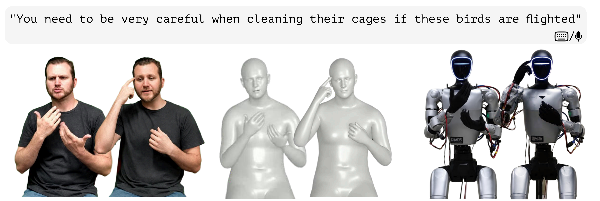
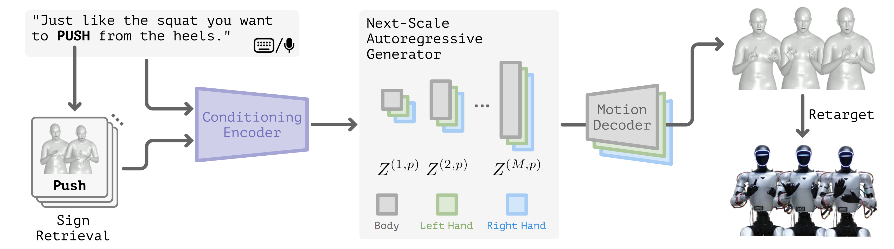

Novel Task
We introduce Embodied Sign Translation, a new task for translating language into sign motion executable by humanoid robots.
UC Berkeley
* Equal contribution
RoboSTAR translates text or speech into continuous American Sign Language motion for humanoid robots.
Overview

Paper
Sign-language interpretation in public communication relies on qualified professional interpreters and can be difficult to scale, motivating robotic signing as a complementary accessibility interface. We present RoboSTAR, a text-conditioned sign language production (SLP) framework for generating human-centric sign motion that can be retargeted for robotic execution, with speech supported optionally through an external ASR front end. Conventional autoregressive approaches flatten motion into a single full-resolution token sequence, forcing long-range and local dependencies to be modeled at a uniform temporal granularity. RoboSTAR instead combines part-wise Finite Scalar Quantization with next-scale autoregression, generating motion over progressively finer temporal resolutions while predicting synchronized body and hand tokens in parallel within each step. This coarse-to-fine formulation provides compact long-range context before progressively refining motion details, while self-conditioning and context corruption improve robustness to cross-scale prediction errors. The generated motion is subsequently retargeted for physical humanoid execution. Extensive qualitative and quantitative evaluations demonstrate the effectiveness of RoboSTAR.
Approach

We introduce Embodied Sign Translation, a new task for translating language into sign motion executable by humanoid robots.
Body and bilateral hands are represented with synchronized, part-specific FSQ tokens.
Motion is generated from coarse to fine across temporal scales, progressively refining global structure and fine articulation.
Self-conditioning and generic context corruption improve robustness to imperfect predictions propagated across scales.
New metrics characterize motion activity, magnitude, and freeze-tail behavior beyond conventional geometric errors.
Achieve the strongest overall performance across geometric, BT, and dynamics evaluations.
Evaluation
| Method | DTW-PA-JPE ↓ | DTW-JPE ↓ | B-T BLEU ↑ | Motion Dynamics | |||||||
|---|---|---|---|---|---|---|---|---|---|---|---|
| Body | Hand | Body | Hand | B-1 | B-2 | B-3 | B-4 |
Dynamic ↔ 0.8 |
Magnitude ↔ 1 |
Freeze-tail ↓ |
|
| GT | -- | -- | -- | -- | 22.45 | 8.59 | 3.95 | 1.96 | 0.804 | 1.000 | 0.036 |
| PT | 10.85 | 2.66 | 10.84 | 10.97 | 13.44 | 4.69 | 1.99 | 0.91 | 0.245 | 0.484 | 0.232 |
| NAR | 4.21 | 1.79 | 4.14 | 5.70 | 6.81 | 2.10 | 0.88 | 0.42 | 0.000 | 0.004 | 1.000 |
| S-MotionGPT | 11.84 | 3.92 | 11.91 | 13.30 | 12.01 | 4.33 | 1.99 | 1.03 | 0.005 | 0.016 | 0.294 |
| T2S-GPT | 4.35 | 1.82 | 4.27 | 5.78 | 7.13 | 2.79 | 1.28 | 0.60 | 0.000 | 0.000 | 1.000 |
| SOKE | 5.73 | 2.08 | 5.73 | 7.26 | 17.25 | 6.31 | 2.86 | 1.39 | 0.388 | 0.515 | 0.163 |
| Ours | 3.96 | 1.52 | 3.87 | 5.34 | 20.08 | 7.12 | 3.04 | 1.36 | 0.432 | 0.523 | 0.187 |
Reference
If you find RoboSTAR useful in your research, please consider citing our work.
@article{robostar2026,
title = {RoboSTAR: Next-Scale Autoregressive Sign Language Motion Translation for Humanoid Robots},
author = {...},
journal = {...},
year = {2026}
}Thanks